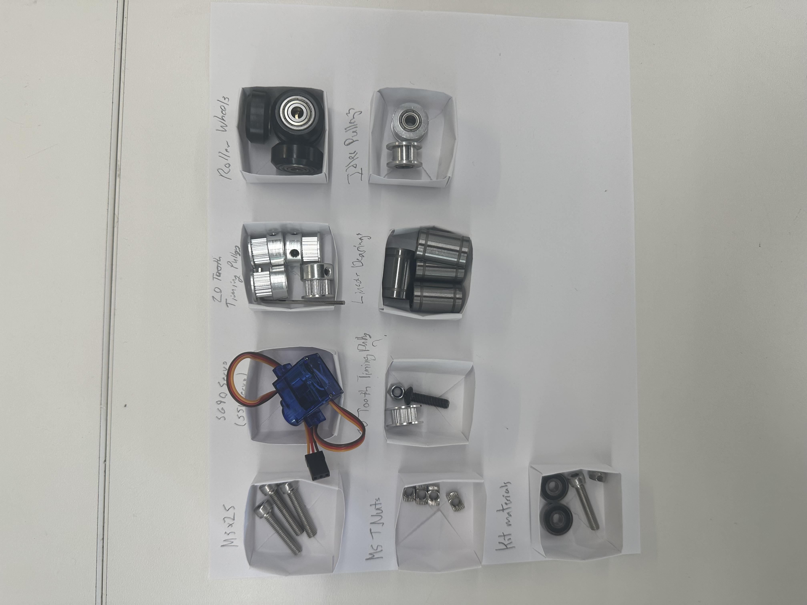
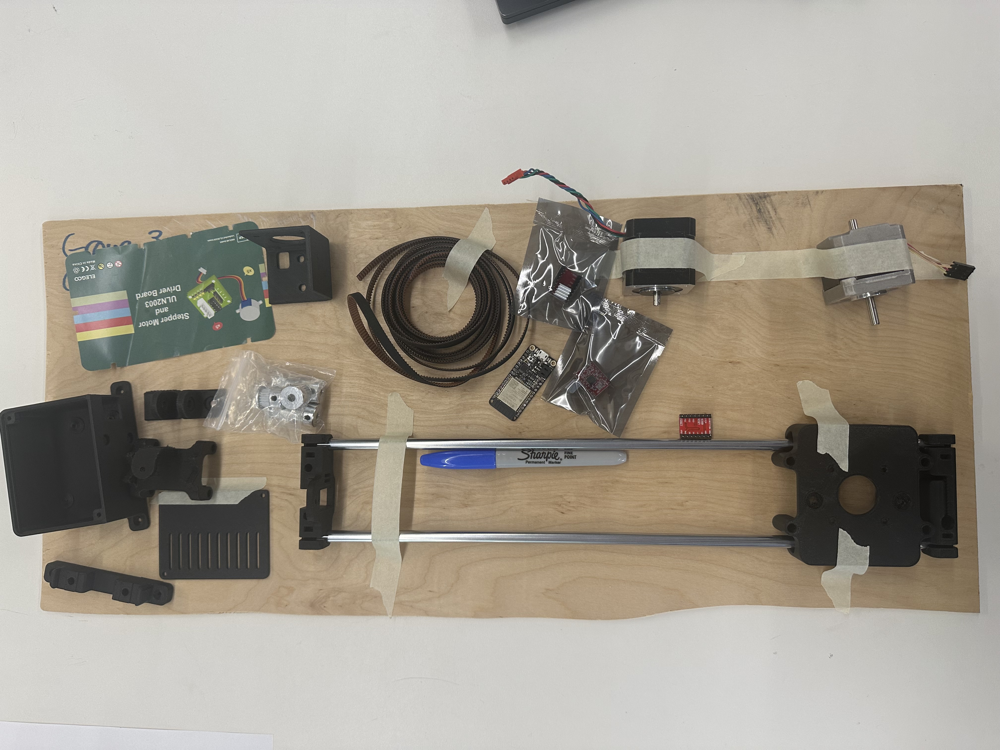
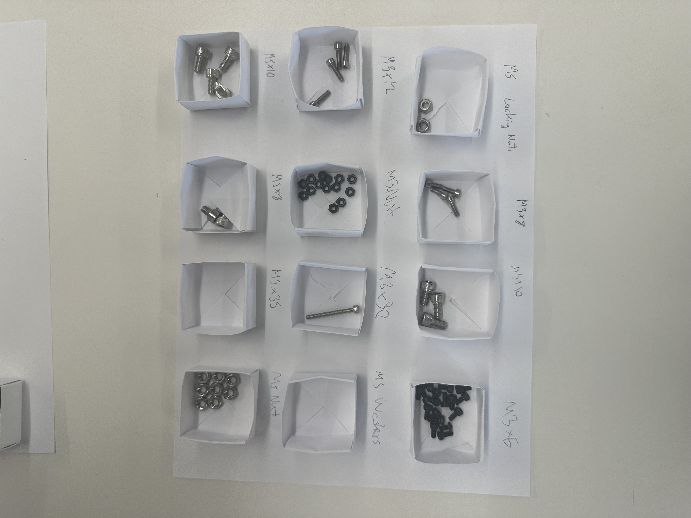
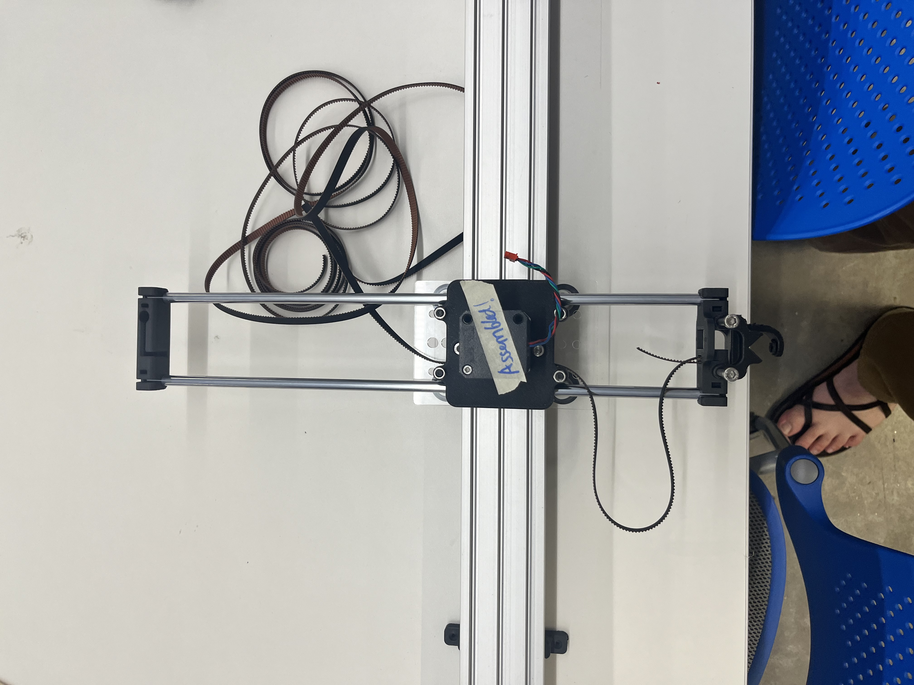
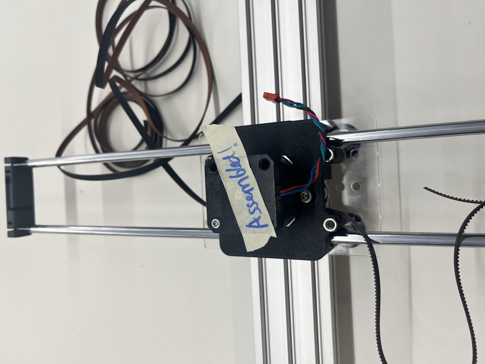
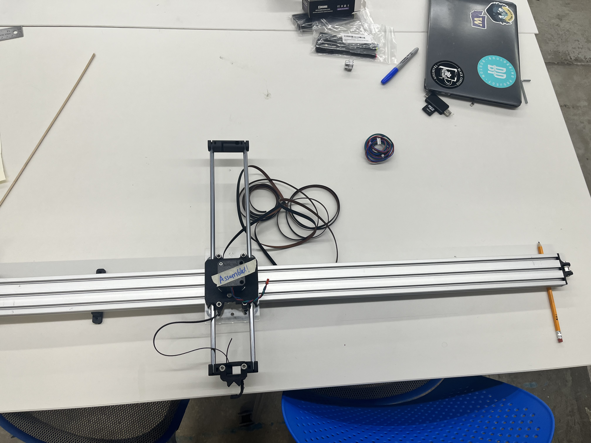

<div class="textcontainer">
<p class="margin"> </p>
<h3>Weeks 10-12: Build a Drawing Machine </h3>
<p class="margin"> </p>
<h4>Preparation: Idea Generation and Brainstorming </h4>
<p class="margin"> </p>
<p>
Our group brainstormed a few possible ideas for the drawing machine project. We were firstly excited about developing a machine that could possibly draw on the human body as a pseudo tattoo gun type drawing experience. While we briefly flirted with the idea of making a tattoo gun it was quickly ruled out due to safety and hygiene concerns. Our second idea was using UV-activated ink or pens (glow-in-the-dark substance) as an output material. Energized by this idea, we decided to move forward with developing a Drawing Machine design from a prior student and online tutorial. We specifically took inspiration from: <a href="https://ctian5136.github.io/ps70portfolio/html/weeks/finalproject.html"> Cindy </a> and pen plotter designs from <a href="https://andrewsleigh.github.io/plotter/"> Andrew Leigh. </a> </p>
<p class="margin"> </p>
<div class="your-centered-div">
<img src="https://www.youtube.com/watch?v=pfx2bN_xx8s" alt="" />
</div>
<!--
<iframe width="315" height="560"
src="https://www.youtube.com/watch?v=pfx2bN_xx8s"
title="YouTube video player"
frameborder="0"
allow="accelerometer; autoplay; clipboard-write; encrypted-media; gyroscope; picture-in-picture; web-share"
allowfullscreen></iframe>
<p class="margin"> </p>
-->
<br>
<h4>Parts Design</h4>
<p class="margin"> </p>
<p>
To create the pen plotter, we used stl parts from Version 3 of the Cartesian Pen Plotter with V-Slot axis. We 3D printed the parts on the Prusa printers. Our first prints came out partially incomplete, so we redid some prints a second time. We then created an organization system for all our parts in order to categorize the many motors, cables, screws, bolts and more that were necessary for assembly.
</p>
<p class="margin"> </p>
<div class="flexrow">



</div>
</p>
<p class="margin"> </p>
<h4>Assembly</h4>
<p class="margin"> </p>
<p>Once all of the 3D parts were correctly printed, we met to assemble the drawing machine. This was by far the most fun part of the process. We followed the photos and videos from the tutorials before us on how to connect all of the printed parts and components of assembly.
<br>
The only V-slot aluminum extrusion we could find was over a meter long, so we mounted the drawing machine on a long piece of plywood as a base (our particular drawing machine is quite a large scale).
</p>
<p class="margin"> </p>
<div class="flexrow">



</div>
</p>
<p class="margin"> </p>
<h4>Wiring</h4>
<p class="margin"> </p>
<p> <b> The following components were used in wiring the drawing machine: </b> </p>
<div>
<ul>
<p>
<li> ESP32</li>
<li>2 x Stepper Drivers</li>
<li>2 x Nema 17 Stepper motors (17 is the physical size)</li>
<li>2 x breadboards</li>
<li>USBC transformer converts 5V to 12V</li>
</p>
</ul>
</div>
<p>
In wiring the two stepper motors for the drawing machine, we used an ESP32 to connect the motors to Arduino in order to control their movement. We wired the motors to two breadboards (one extender board) and then used the Stepper drivers to transform movement instructions from Arduino and intake voltage to power the motors. We need to be able to simultaneously control both stepper motors. In order to figure this out, we looked at Cindy's old board and referenced the pins to assemble our board. We also had to construct our own extra long wires because our board scale is so large.
<br>
We ran into some issues getting one of our Stepper Motors to run. After running a current to the motor, we learned that one of our motors had an internal issue, which Bobby suggested could be due to some magnetization issues.
<br>
We initially struggled to get power to work because we only had AC cords, which is why we used the adapter to convert the 5V power supply into the 12V we needed to power two motors from an external power supply. </p>
<p class="margin"> </p>
<h4>Programming</h4>
<p class="margin"> </p>
<p>
We developed some initial code to get the motors to individually move. Unfortunately, we weren't able to get the drawing machine responsive to this code after running into a number of bugs. Our next steps are to write and compile the Arduino code necessary for controlling the motors speed and direction, and second to develop the processing code necessary for Gcode use with the Pen plotter. </p>
<br>
<div>
</div>